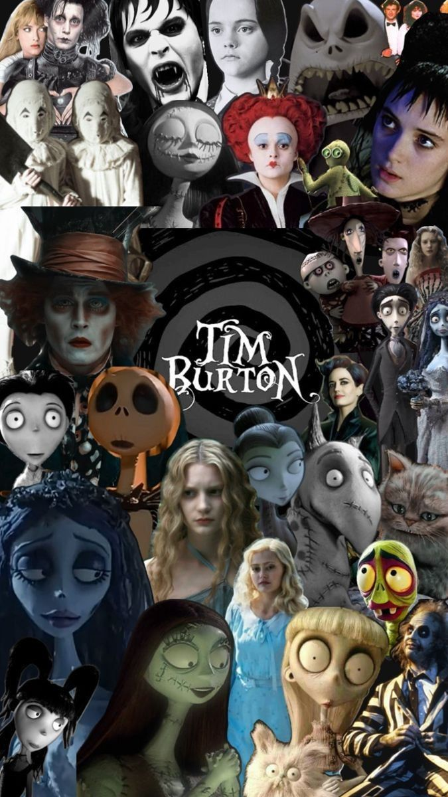

🎩 Personajes de Tim Burton
- Edward Manostijeras – Un joven con tijeras en lugar de manos, solitario y sensible.
- Jack Skellington (Pesadilla antes de Navidad) – El rey calavera de Halloween Town, soñador y curioso.
- Beetlejuice – Un fantasma excéntrico y travieso que causa caos por diversión.
- Sally (El extraño mundo de Jack / Corpse Bride) – Tierna y valiente, hecha de retazos, enamorada de Edward o Jack según la historia.
- Victor Frankenstein / Sparky (Frankenweenie) – Victor, un niño inventor, y su perro Sparky, ambos adorables y valientes.
- Emily / La Novia Cadáver – Fantasmal y romántica, símbolo del amor trágico.
- El Sombrerero Loco (Alicia en el País de las Maravillas) – Excéntrico, divertido y un poco inquietante.